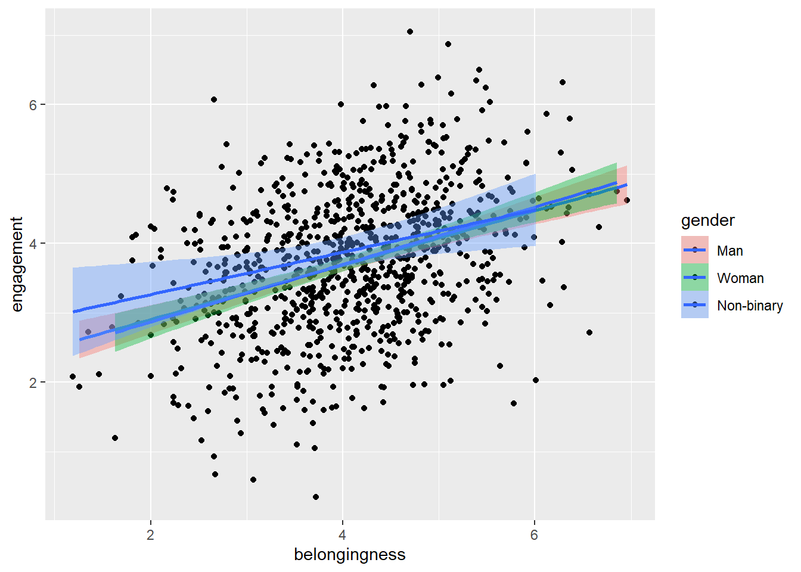

8 Belonging 2
8.1 Intended Learning Outcomes
By the end of this chapter you should be able to:
- Debug your code by identifying and fixing a variety of errors
8.2 Walkthrough video
There is a walkthrough video of this chapter available via OneDrive. We recommend first trying to work through each section of the book on your own and then watching the video if you get stuck, or if you would like more information. This will feel slower than just starting with the video, but you will learn more in the long-run. Please note that there may have been minor edits to the book since the video was recorded. Where there are differences, the book should always take precedence.
8.3 Error mode
For the final chapter of this semester, we’re going to try something a bit different. Instead of asking you to write code, we’re going to give you code that either won’t run and will throw an error, or it will run, but it won’t quite do what it’s supposed to do. Your job is to debug your code by finding and fixing the errors.
We will give you hints but we won’t be giving any solutions. To figure out the answer to each activity you should:
- Read the error messages
- Check the output of any code that runs very carefully, including looking at variable names
- Use the search function in this book to look up how to use functions
- Talk to your group and try and figure it out together
- Google the error messages
- Try changing stuff and see what happens
Don’t use ChatGPT or other AI tools for this chapter because you won’t learn anything, you need to be the one that figures out the error. Once you’ve figured it out, make notes on what the error was and how you fixed it because there’s actually a relatively small set of errors you’ll make again and again so it will help you debug future code.
8.4 Activity 1: Setup
- Open your Belonging project
- Then open
belong_stub2.Rmd. - To create the errors, you’ll need to ensure you’re working from a clean environment and new session. If you followed the instructions in Chapter 1, this should happen automatically but just in case, follow the below steps which will clear all objects and unload any packages you have loaded:
Click
SessionthenRestart R.Then run the following code which will clear all objects you have created:
Then, read this article on the Top 10 Errors in R and How to Fix Them
8.5 Activity 2: Load packages and data
With this code, we want to use the function read_csv() from the tidyverse package to load the data into two objects demographic_data and questionnaire_data. This code will produce an error and won’t run.
In order to use a function, you must load the package it is in first
8.6 Activity 3: Join the datasets
With this code, we want to join the two objects demographic_data and questionnaire_data together and save them in an object named full_dat. full_dat should have 1000 rows and 7 variables. This code will run, but it won’t produce what you want.
If you want to pass multiple values to an argument, you need to combine them otherwise R will only parse the first value. In the case of inner_join(), if R doesn’t know that columns are the same in both objects it will create two versions of the column (and distinguish them with.x and .y).
8.7 Activity 4: Filter
Next, we want to filter the questionnaire data to only include first-year students:
This is one of those rare times when reading the error message will give you a clear explanation of what the problem is and how to fix it.
8.8 Activity 5: Mutate and recode
Then, we want to recode gender as a factor and count the number of participants in each gender group. This code will run, but it will introduce an error into your data.
Look at the order of the levels and labels and think about what 1, 2, and 3 are supposed to represent.
8.9 Activity 6: Select
This code should use the function select() to select the columns participant, gender_coded, age, the three questionnaire score columns, and also rename gender_coded as gender.
Typos (either mispelled word or incorrect use of capital letters) are the most common cause of code not working. There are two of them in this code.
8.10 Activity 7: Summarise
This code should use group_by() and summarise() to calculate the mean scores on each belonging sub-scale by gender and save it in an object named scores_gender. The final table should have 4 columns (gender, belong, engagement, and confidence) and three rows (one for each gender). This code will run, but it won’t produce what it is supposed to.
If you’re trying to calculate summary statistics by group, you only need to add the variables you want to create stats for to group_by(). If you get more rows of data than you want, you’ve probably got too many variables in group_by(), if you’ve got too few rows of data, you’ve probably not got all the variables you need.
8.11 Activity 8: Boxplots
Now we want to make a boxplot that shows belonging scores by gender using ggplot(). This code will either give you an error of incomplete expression or it may not throw an error, but it also won’t fully run and you’ll need to put your cursor in the console and press escape to get out of it.
Every ( needs a ).
8.12 Activity 9: Scatterplot
Finally, we want to make a grouped scatterplot that shows the relationship between belonging scores and engagement scores by gender. There should be different coloured data points for each gender and different coloured lines and the colours should use the colour-blind friendly viridis palette.
This code will run and produce a scatterplot, but it isn’t what we want.
`geom_smooth()` using formula = 'y ~ x'
fill sets the color inside the points. Using fill with dots and lines might not make much of a difference because they don’t have an area to fill. What other argument can you use to change the colour?
8.13 Finished
And you’re done, not only with this chapter but for the data skills workbook for Psych 1A! You’ve come incredibly far in a short space of time. It doesn’t matter if you don’t understand absolutely all of the code we’ve covered so far and there’s no expectation that you would be able to do any of it completely from memory at this point. What matters is that your skills are developing and you’re making progress in the right direction.